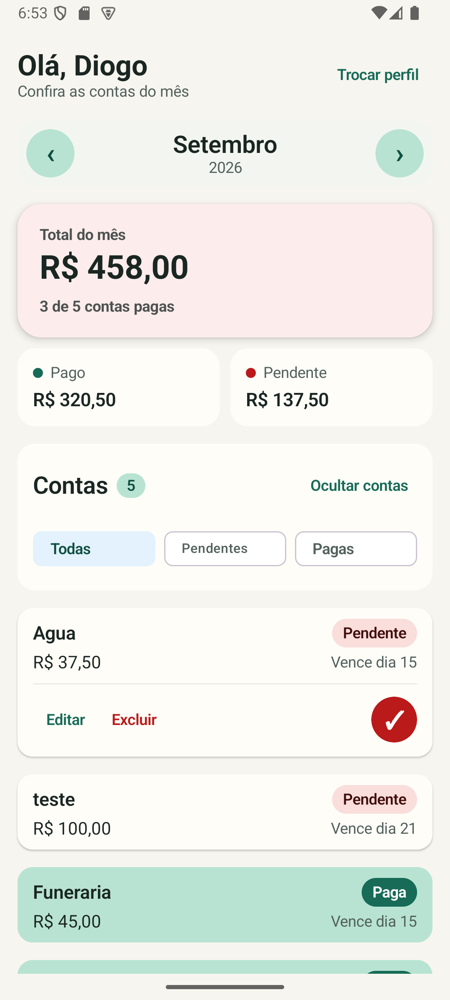
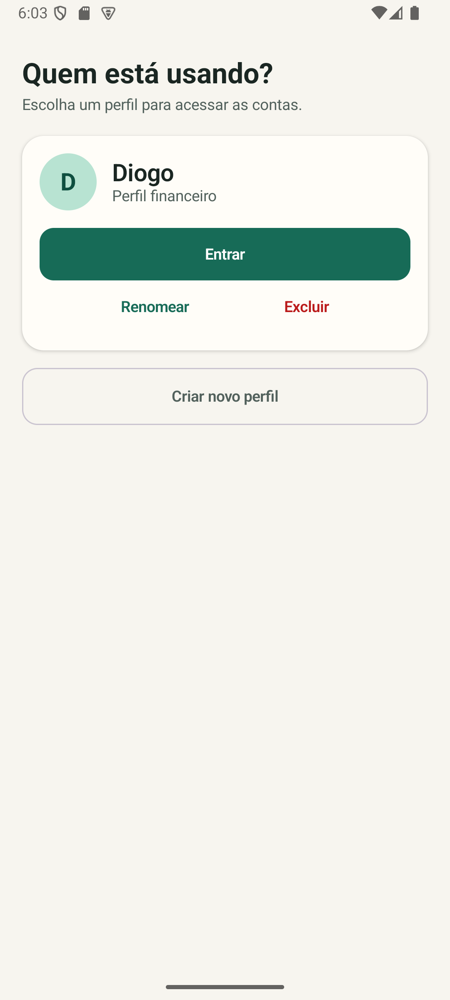
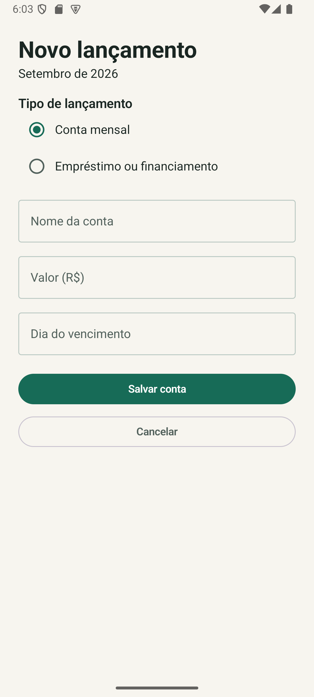
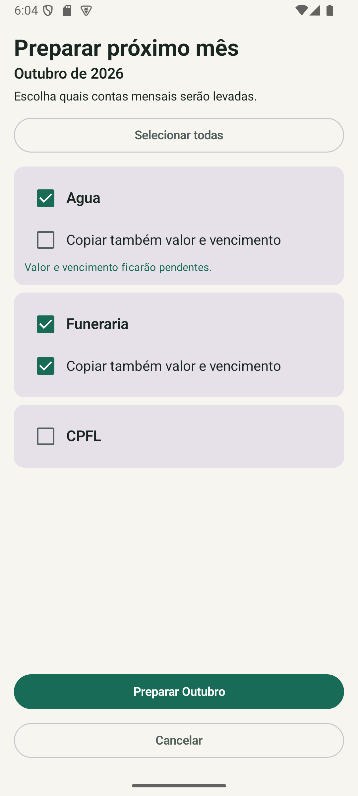

Controle mensal
Navegação entre meses com resumo do total, valores pagos, pendentes e quantidade de contas.
Um aplicativo Android nativo criado para facilitar o controle de contas domésticas, pagamentos e financiamentos, mantendo todos os dados localmente no dispositivo.

O Contas da Casa nasceu para resolver uma necessidade prática: acompanhar despesas mensais sem depender de planilhas, serviços online ou interfaces complexas.
Cada perfil possui suas próprias contas, permitindo navegar entre meses, acompanhar pagamentos, cadastrar financiamentos e preparar os lançamentos do próximo mês.
A interface foi pensada para deixar as informações importantes visíveis sem sobrecarregar a tela.
Navegação entre meses com resumo do total, valores pagos, pendentes e quantidade de contas.
Cadastre uma conta mesmo sem saber o valor e complete essa informação posteriormente.
Cards resumidos e expansíveis mantêm listas grandes organizadas e fáceis de consultar.
Visualize todas as contas, apenas pendentes ou apenas pagas e oculte a lista quando quiser.
Geração automática das parcelas futuras com opções específicas de edição e exclusão.
Room e SQLite mantêm as informações no próprio aparelho, sem necessidade de servidor ou internet.
As principais telas acompanham o fluxo real de uso do aplicativo.

Separe completamente as contas de cada pessoa.
Totais, filtros e contas compactas em uma única visão.

Cadastre contas mensais ou financiamentos.

Escolha quais contas serão levadas para o período seguinte.
Selecione ou crie o perfil que será utilizado.
Acompanhe resumo, contas pendentes e pagamentos.
Cadastre, edite, exclua ou marque uma conta como paga.
Leve apenas as contas necessárias para o mês seguinte.
O projeto foi desenvolvido com Kotlin e Jetpack Compose, utilizando Room para persistência e ViewModel para gerenciamento de estado.
O Contas da Casa não exige login, servidor externo ou conexão com a internet. Os dados financeiros são armazenados localmente no dispositivo.
Projeto Android desenvolvido por diogozarpelo com foco em usabilidade, organização financeira e desenvolvimento mobile nativo.
Acessar repositório